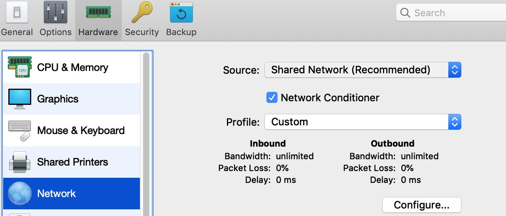
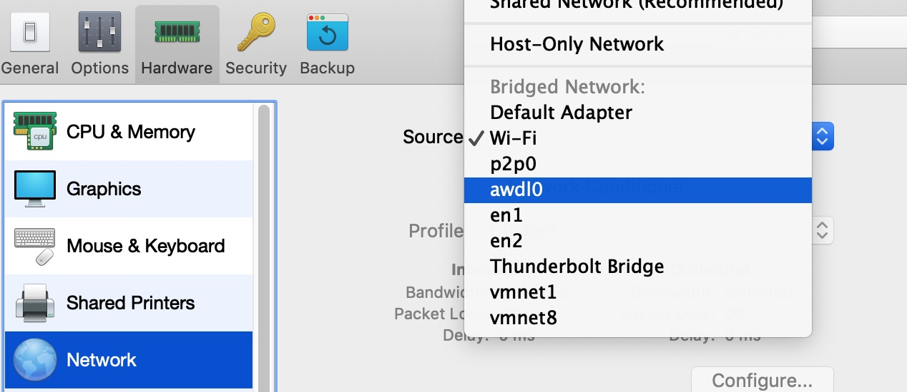
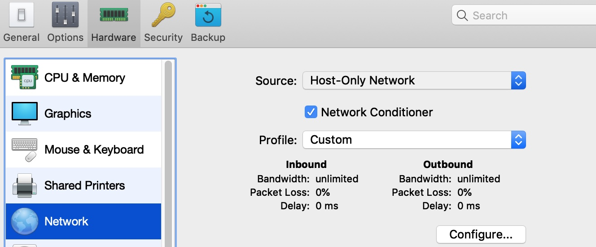

CentOS 在 Parallels Desktops 中网络配置的三种模式
本文简要介绍了如何在 Parallels Desktops 中配置 CentOS 虚拟机的网络
三种模式简介：
- NAT (Shared Network)
- Host-Only Network
- Bridged Network
环境搭建：
- 操作系统：macOS Mojave
- 虚拟机：Parallels Desktop
- 软件版本：CentOS 7.0 minimal
使用NAT模式
使用NAT模式时，可以选择使用某个虚拟网卡，
此时需要知道该网卡的网关，可在主机中使用
ifconfig命令查看：
1 | $ ifconfig 得到虚拟网卡地址： |

在Source选项中选择 Shared Network，如上图，
编辑 /etc/sysconfig/network-scripts/ifcfg-eth0 配置文件[一般格式 ifcfg-xxx]:
自动分配IP：[这样配置不用管上面得到的网卡地址]
1
2
3
4
5
6# Generated by parse-kickstart
DEVICE="eth0"
IPV6INIT="yes"
BOOTPROTO="dhcp"
UUID="afa8f527-af4c-4a93-bc1b-3ebc7f49816c"
ONBOOT="yes"使用静态IP：[必须按照虚拟网卡地址的网段配置]
1
2
3
4
5
6
7
8
9# Generated by parse-kickstart
DEVICE="eth0"
IPV6INIT="yes"
BOOTPROTO="static"
IPADDR="10.211.55.100" <------- 注意IP
NETMASK="255.255.255.0"
GATEWAY="10.211.55.1" <------- 网关地址，部分软件使用xx.xx.xx.2作为网关地址
UUID="afa8f527-af4c-4a93-bc1b-3ebc7f49816c"
ONBOOT="yes"配置完成后：重启网络并测试
1
2$ service network restart
$ ping baidu.com -c 4 ----> 若成功，则实验完成若没有测试成功，检查虚拟机与主机的连接状态，酌情处理：
1
2$ ping host_ip
以及从主机ping虚拟机
使用桥接模式
使用桥接模式时：PD的设置如图(此时我需要桥接到wifi网卡上，因为我是连的wifi)

查看主机ip：
1
inet 192.168.199.133 netmask 0xffffff00 broadcast 192.168.199.255
- 使用静态IP：[必须上面主机ip属于同一网段]
1
2
3
4
5
6
7
8
9# Generated by parse-kickstart
DEVICE="eth0"
IPV6INIT="yes"
BOOTPROTO="static"
IPADDR="192.168.199.200" <------- 注意IP
NETMASK="255.255.255.0"
GATEWAY="192.168.199.1" <------- 网关地址，参考主机的网关地址
UUID="afa8f527-af4c-4a93-bc1b-3ebc7f49816c"
ONBOOT="yes"
遇到问题：ping qq.com or ping baidu.com 不成功!
查看DNS解析:
1 | cat /etc/resolv.conf 发现为空 |
重启网络，测试成功
- 自动分配IP：[超级省事，一配一个准]
1
2
3
4
5
6# Generated by parse-kickstart
DEVICE="eth0"
IPV6INIT="yes"
BOOTPROTO="dhcp"
UUID="afa8f527-af4c-4a93-bc1b-3ebc7f49816c"
ONBOOT="yes"
使用仅主机模式

- 略。用处不多。